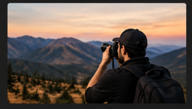
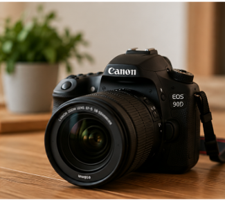

Quién soy

Soy Martín López, fotógrafo independiente especializado en fotografía de eventos, retratos y contenido visual para emprendimientos.
Mi objetivo es crear imágenes naturales y profesionales que permitan representar momentos, personas y marcas de una manera clara y atractiva.
Servicios

- Fotografía de eventos sociales
- Retratos personales y profesionales
- Fotografía de productos
- Contenido para emprendimientos y redes sociales
- Eventos corporativos
Trayectoria
Trabajo de manera independiente desde hace cinco años. Durante este tiempo realicé producciones para clientes particulares, pequeños emprendimientos y eventos sociales.
Me interesa trabajar de forma cercana con cada cliente para entender qué tipo de imágenes necesita y adaptar cada sesión al objetivo del proyecto.